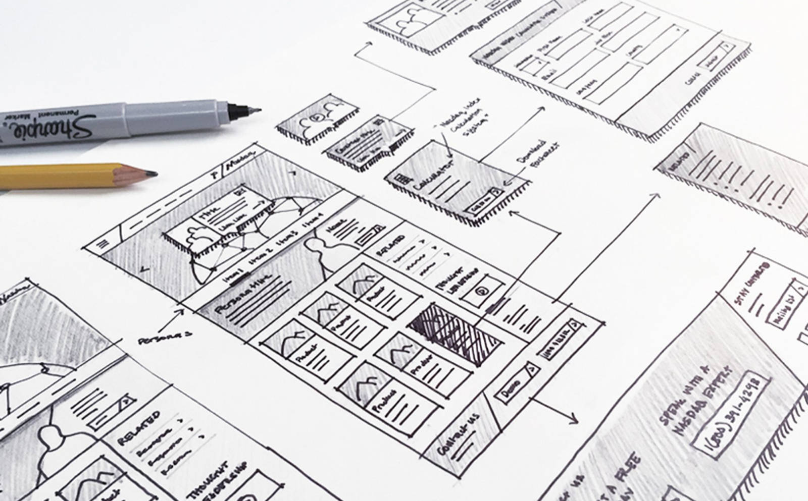

What are Paper Wireframes? Quick black-and-white sketches of the main screens on paper, used to work out layout and flow cheaply before moving into Figma.
On this page

Context
Paper wireframes are simple, black and white drawings that representation your design main concept. This exercise focuses on creating sketches that communicate structure and flow, not visual polish.
Goal / Learning Outcome
By the end of this activity you should have, students will developed a set of paper wireframes that can be brought into the digital space moving forward in the next step.
Main Exercise
Revisit your user journey, style guide and task flow. Create a step by step representation of your main task flow.
Extra Notes
- Start in pencil and go over in pen if you like
- Use notes and arrows if needed.
- Stay away from colour. Some pen and light shading with a pencil is sufficient.
Template

Tips
- Start broad: layout first, details later.
- Label buttons, inputs, and links clearly.
- Think about user journey
- Don’t worry about fonts, or images.
- Try to think about your H1-H3 and your body text
Media
Resources
Paper Prototyping: Getting User Data Before You Code – Nielsen Norman Group
UX Prototypes: Low Fidelity vs. High Fidelity – Nielsen Norman Group
Checklist
☐ Revisited your user journey, task flow and style guide
☐ Sketched every screen in your main task flow
☐ Numbered the screens in order
☐ Walked a classmate through the flow and noted where they got stuck
Summary
Paper wireframes are a fast and inexpensive method to explore design ideas, test flows, and identify usability issues early. By creating and iterating paper prototypes, students gain confidence in their concepts and set the foundation for higher-fidelity designs.